SMAN 103 Jakarta adalah sekolah menengah atas yang berkomitmen pada pendidikan holistik, mengedepankan keunggulan akademik, pengembangan non-akademik, serta penanaman karakter Profil Pelajar Pancasila. Kami berupaya menciptakan lingkungan belajar yang inspiratif, aman, dan nyaman untuk mencapai potensi terbaik setiap siswa.
Visi dan Misi Sekolah
Visi
“Unggul Dalam Akademik dan Non Akademik Berlandaskan Profil Pelajar Pancasila”
Misi
✨Meningkatkan keimanan dan ketakwaan peserta didik melalui perilaku religius dalam kehidupan sehari-hari.
✨Menyelenggarakan pembelajaran secara efektif, efisien dan bermakna sehingga peserta didik memiliki kemampuan berpikir kritis dan kreatif.
✨Menyelenggarakan pengembangan diri sehingga peserta didik dapat berkembang secara optimal sesuai dengan minat dan bakat melalui kegiatan bimbingan dan ekstrakurikuler.
✨Bergotong royong dalam mewujudkan lingkungan sekolah yang aman dan nyaman.
✨Meningkatkan keselarasan dalam berkebhinekaan global.
Sarana Sekolah
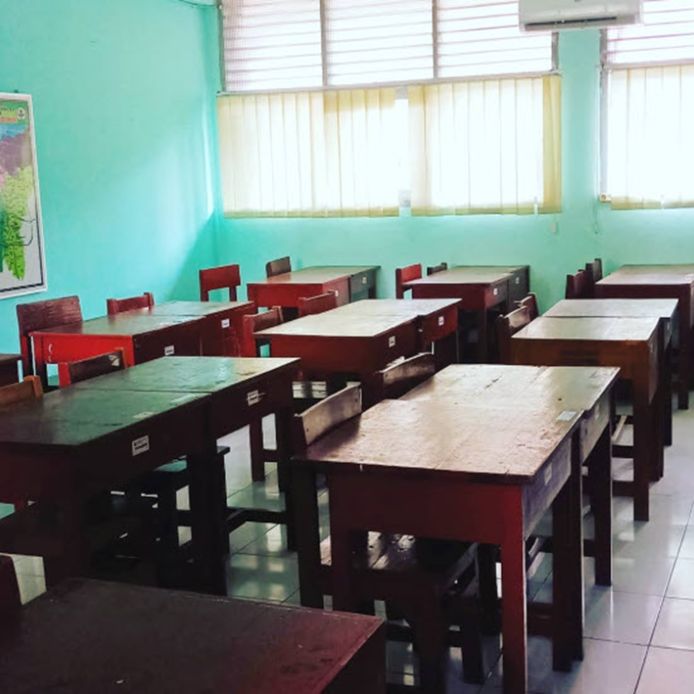
1. Meja dan Kursi Siswa serta Guru
Meja dan kursi berfungsi sebagai perlengkapan utama dalam kegiatan belajar mengajar. Meja dan kursi siswa digunakan untuk menulis, membaca, serta menyimpan perlengkapan belajar. Sementara itu, meja dan kursi guru digunakan untuk mengajar, menempatkan materi pelajaran, serta mengawasi kegiatan di kelas. Penataan meja dan kursi yang rapi juga membantu menciptakan suasana kelas yang nyaman dan teratur.
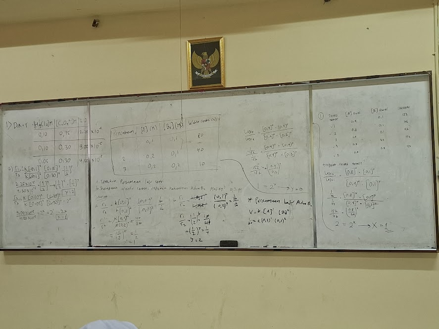
2. Papan Tulis dan Alat Tulis
Papan tulis dan alat tulis berfungsi sebagai media utama penyampaian materi dari guru kepada siswa. Guru dapat menuliskan penjelasan, rumus, atau contoh soal secara visual sehingga lebih mudah dipahami. Papan tulis juga dapat digunakan untuk kegiatan diskusi dan presentasi. Alat tulis seperti spidol atau kapur mendukung kelancaran proses pembelajaran harian.
3. Proyektor / LCD dan Speaker
Perangkat proyektor atau LCD berfungsi untuk menampilkan materi pembelajaran dalam bentuk digital seperti presentasi, video, dan gambar. Speaker mendukung penyampaian suara dengan jelas ke seluruh kelas. Sarana ini membantu proses pembelajaran menjadi lebih menarik, interaktif, dan mudah dipahami terutama untuk penjelasan visual atau multimedia.
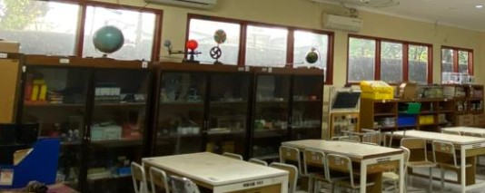
4. Peralatan Laboratorium Fisika
Peralatan laboratorium fisika seperti alat ukur, bandul, neraca, listrik statis, dan instrumen percobaan lainnya berfungsi untuk mendukung kegiatan praktikum. Siswa dapat melakukan percobaan untuk membuktikan teori fisika secara langsung. Sarana ini melatih keterampilan observasi, analisis, serta penerapan konsep ilmiah dalam kehidupan nyata.
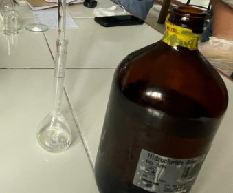
5. Peralatan Laboratorium Kimia
Peralatan kimia seperti tabung reaksi, gelas ukur, pipet, buret, bahan kimia, dan alat pengaman berfungsi untuk melakukan berbagai eksperimen kimia. Sarana ini membantu siswa memahami konsep reaksi kimia, sifat zat, serta melatih ketelitian dan keterampilan laboratorium. Peralatan ini juga mendukung pembelajaran berbasis praktik, bukan hanya teori.
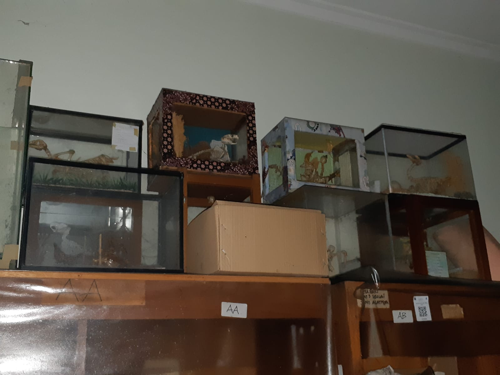
6. Peralatan Laboratorium Biologi
Peralatan biologi seperti mikroskop, preparat, alat bedah, dan spesimen digunakan untuk kegiatan pengamatan struktur makhluk hidup dan praktikum bioteknologi sederhana. Sarana ini berfungsi memperdalam pemahaman siswa tentang organisme hidup dan proses biologis secara nyata melalui pengamatan langsung.
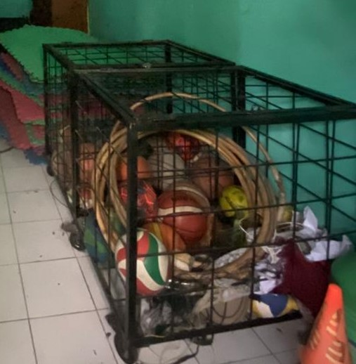
7. Peralatan Olahraga
Peralatan olahraga seperti bola, net voli, raket, matras, dan alat senam digunakan untuk mendukung kegiatan pendidikan jasmani dan ekstrakurikuler olahraga. Sarana ini berfungsi meningkatkan kebugaran fisik, melatih keterampilan gerak, serta menumbuhkan sikap sportivitas dan kerjasama tim antar siswa.
8. Peralatan Perpustakaan
Peralatan perpustakaan meliputi rak buku, meja baca, komputer katalog, serta alat peminjaman buku. Sarana ini berfungsi mendukung sistem pengelolaan buku agar tertata rapi, memudahkan pencarian bahan bacaan, serta menciptakan suasana belajar yang nyaman dan tenang di perpustakaan.
9. Komputer dan Jaringan Internet
Komputer dan jaringan internet berfungsi sebagai sarana pembelajaran berbasis teknologi informasi. Siswa dapat mengakses materi pelajaran digital, mengerjakan tugas, dan memperluas wawasan melalui sumber belajar online. Bagi guru, komputer digunakan untuk pembuatan bahan ajar, administrasi, serta evaluasi pembelajaran.
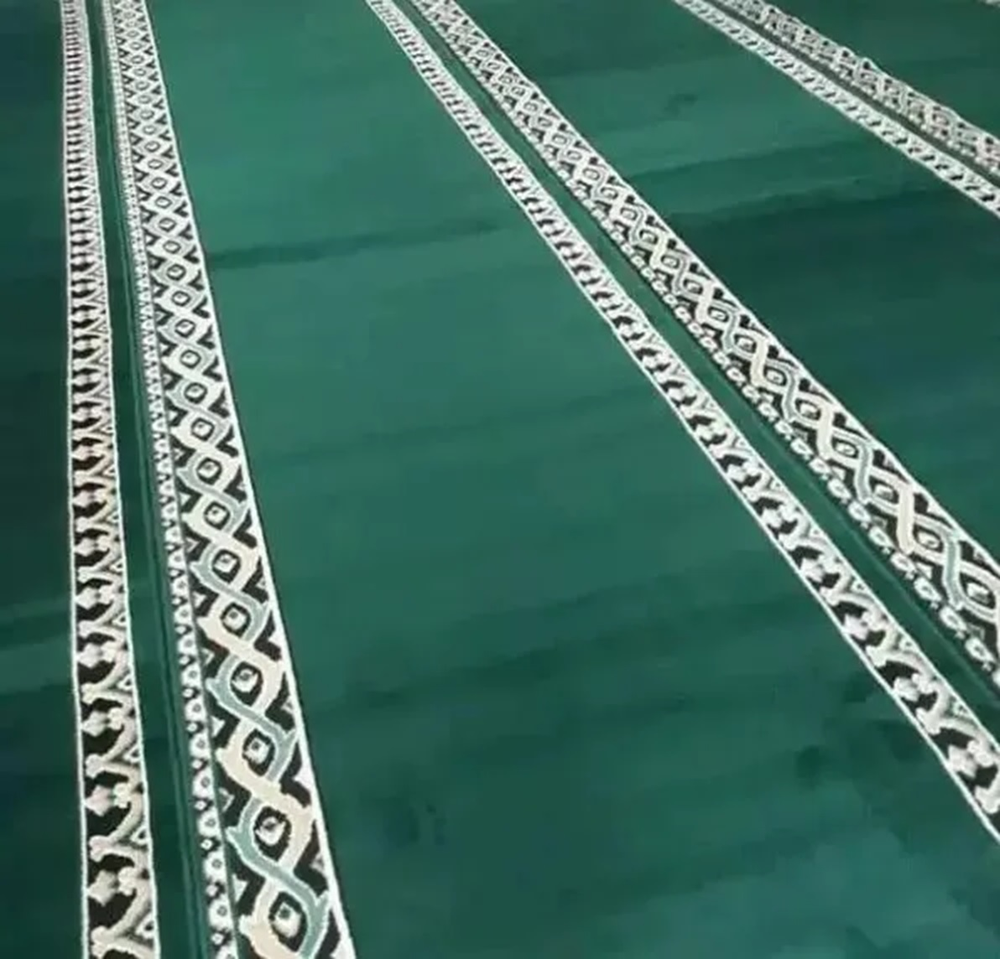
10. Alat Ibadah
Alat ibadah seperti sajadah, mukena, sarung, Al-Qur'an, dan pengeras suara digunakan untuk mendukung pelaksanaan kegiatan keagamaan di musala atau ruang ibadah sekolah. Sarana ini berfungsi untuk memfasilitasi ibadah harian dan membentuk karakter religius warga sekolah melalui pembiasaan ibadah bersama.
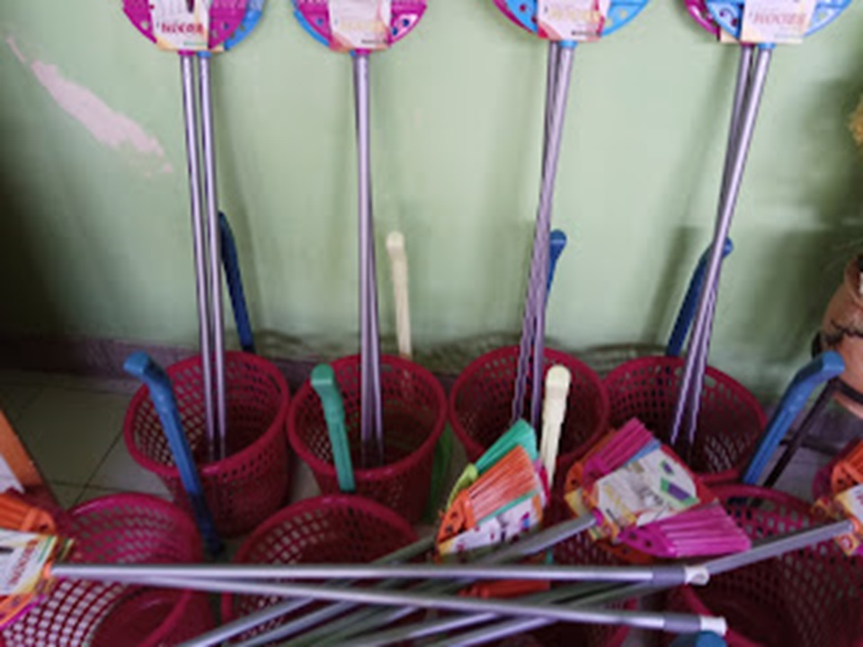
11. Alat Kebersihan
Alat kebersihan seperti sapu, pel, tempat sampah, dan alat penyemprot air berfungsi menjaga kebersihan lingkungan sekolah. Sarana ini mendukung terciptanya lingkungan belajar yang sehat, rapi, dan nyaman. Selain itu, penggunaan alat kebersihan juga melatih siswa untuk memiliki sikap peduli terhadap kebersihan lingkungan.
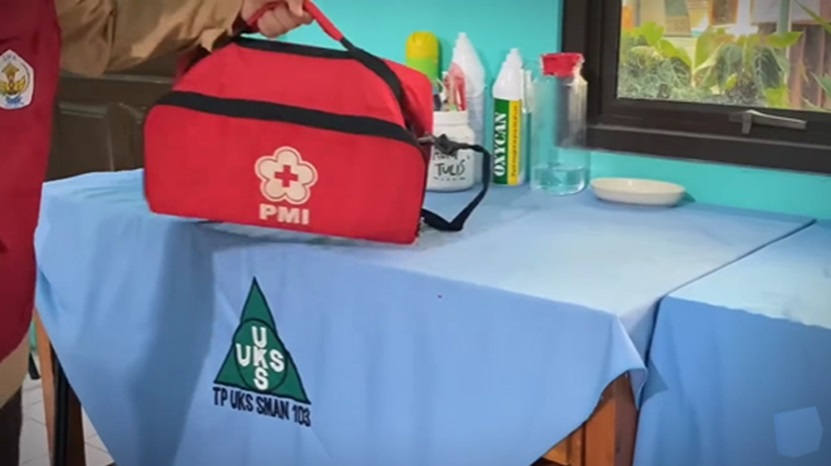
12. Peralatan UKS
Peralatan UKS seperti kotak P3K, termometer, tempat tidur periksa, dan alat medis dasar berfungsi untuk memberikan pertolongan pertama saat terjadi cedera atau siswa merasa sakit di sekolah. Sarana ini mendukung program kesehatan sekolah serta menjaga keselamatan dan kesejahteraan warga sekolah.
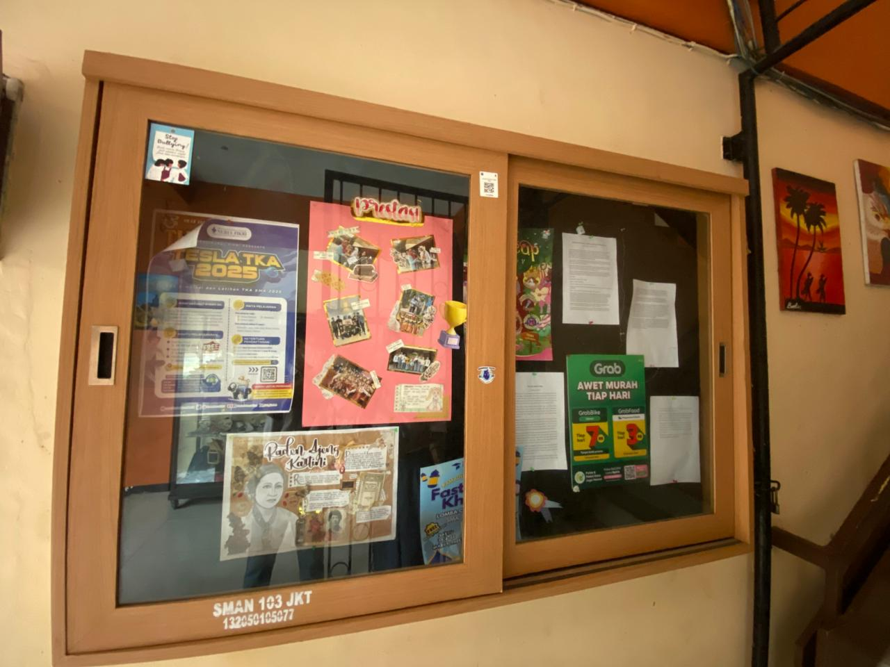
13. Mading (Majalah Dinding)
Mading berfungsi sebagai sarana informasi, komunikasi, dan ekspresi kreativitas siswa. Biasanya dipasang di area strategis seperti lorong atau dekat ruang kelas agar mudah dibaca banyak orang. Melalui mading, siswa dapat menampilkan karya tulis, pengumuman, jadwal kegiatan, poster, hingga hasil lomba. Sarana ini juga mendukung pembelajaran literasi, meningkatkan minat baca, serta melatih siswa dalam menyusun informasi secara menarik dan informatif.
Prasarana Sekolah
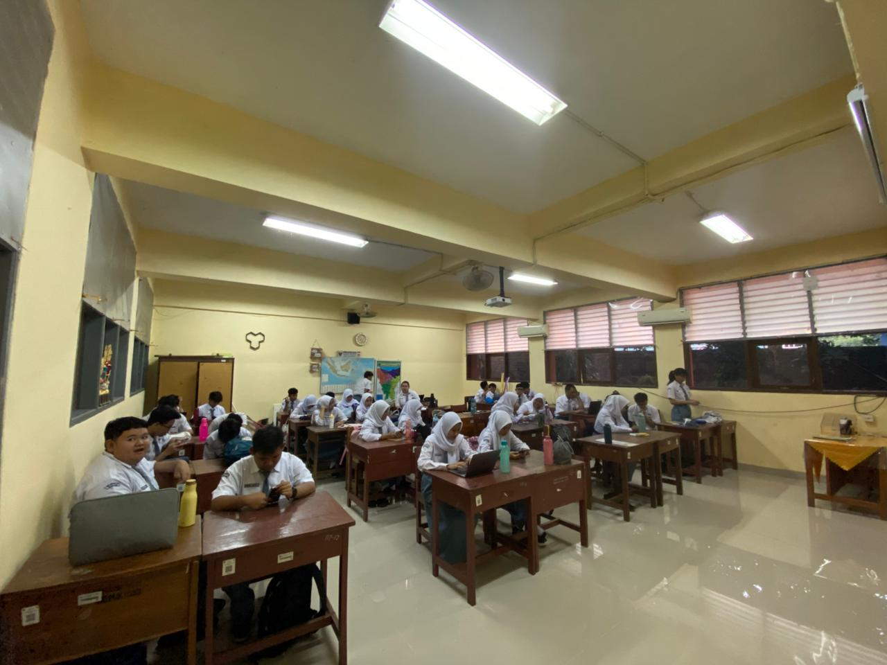
1. Ruang Kelas
Ruang kelas merupakan tempat utama berlangsungnya kegiatan belajar mengajar. Di dalamnya terdapat papan tulis, meja dan kursi guru serta siswa, lemari penyimpanan, serta perlengkapan pembelajaran lainnya. Ruang kelas yang bersih, nyaman, dan memiliki ventilasi serta pencahayaan cukup akan mendukung proses belajar yang fokus dan kondusif. Penataan meja yang rapi dan lingkungan yang tenang membantu terciptanya suasana belajar yang menyenangkan.
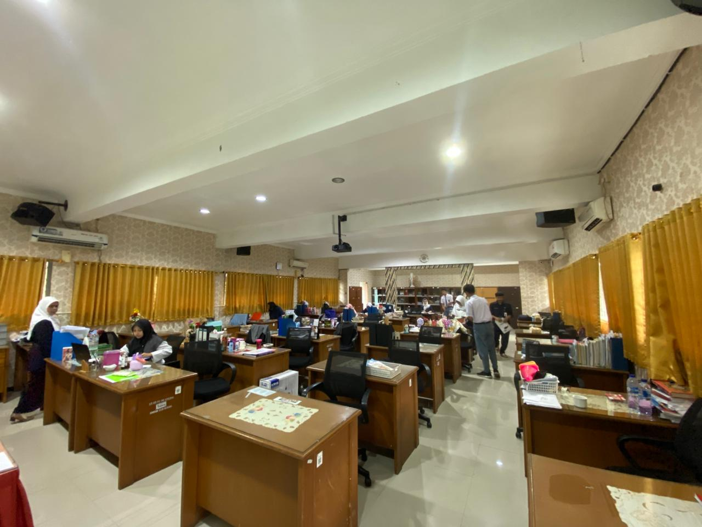
2. Ruang Guru
Ruang guru menjadi tempat bagi para pendidik untuk beristirahat, berdiskusi, dan menyusun rencana pembelajaran. Di sini biasanya terdapat meja kerja masing-masing guru, komputer, lemari arsip, serta papan pengumuman internal. Ruangan ini juga berfungsi untuk meningkatkan koordinasi antar guru sehingga proses belajar mengajar dapat berlangsung terarah dan terorganisir dengan baik.
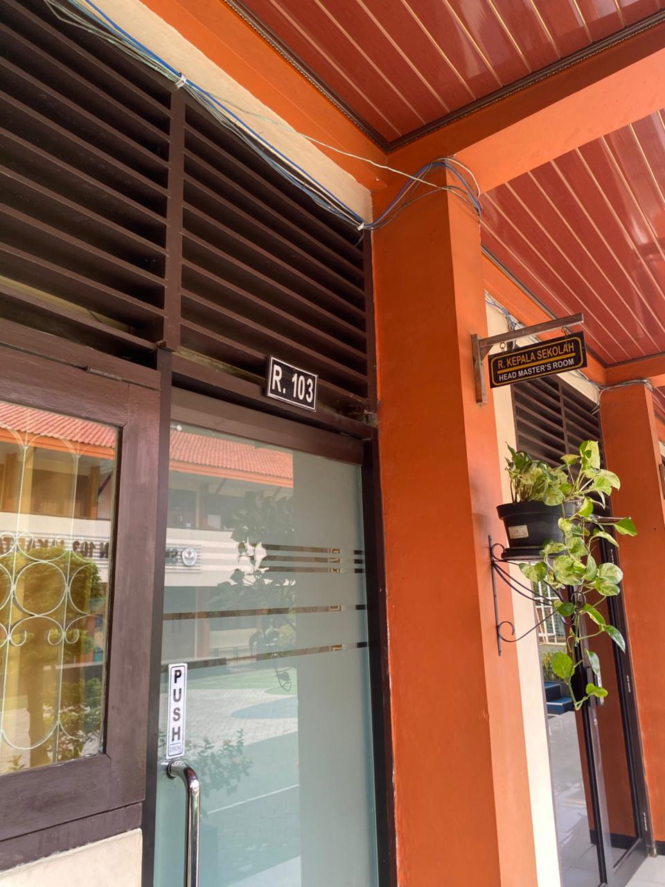
3. Ruang Kepala Sekolah
Ruang kepala sekolah berperan sebagai pusat kegiatan manajerial sekolah. Kepala sekolah menggunakan ruangan ini untuk mengelola administrasi, mengadakan rapat kecil, menerima tamu resmi, dan menyimpan dokumen penting. Ruangan ini biasanya dilengkapi dengan meja kerja, kursi tamu, lemari arsip, dan papan informasi, sehingga mendukung kelancaran pengelolaan sekolah secara menyeluruh.
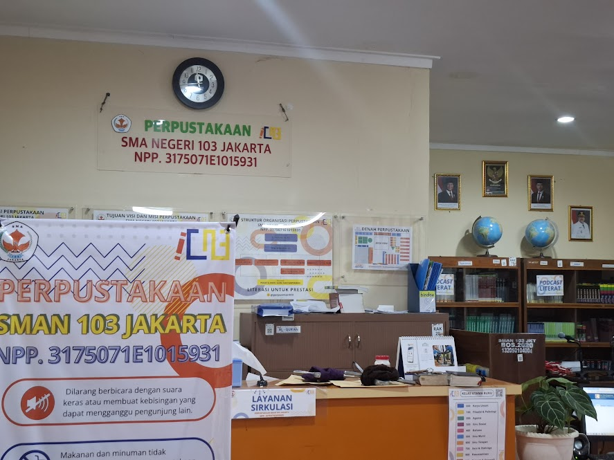
4. Perpustakaan
Perpustakaan menyediakan berbagai koleksi buku pelajaran, ensiklopedia, buku referensi, karya sastra, dan majalah pendidikan. Tempat ini dirancang agar tenang sehingga siswa dapat membaca atau belajar dengan fokus. Perpustakaan juga menjadi pusat literasi dan sumber pengetahuan tambahan di luar jam pelajaran. Fasilitas seperti meja baca, komputer katalog, dan rak buku yang tertata rapi mendukung kenyamanan pengunjung.
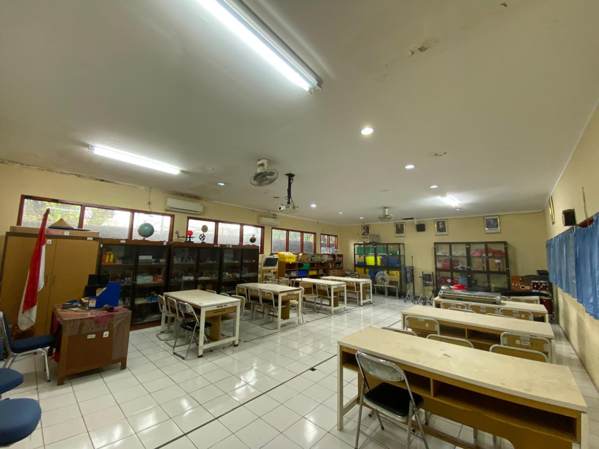
5. Laboratorium Fisika
Laboratorium fisika digunakan untuk melakukan percobaan dan praktik yang berhubungan dengan konsep-konsep fisika. Di laboratorium ini tersedia peralatan seperti alat ukur, bandul, neraca, listrik statis, dan berbagai instrumen lainnya. Siswa dapat membuktikan teori melalui kegiatan eksperimen, sehingga pemahaman mereka terhadap materi menjadi lebih mendalam dan konkret.
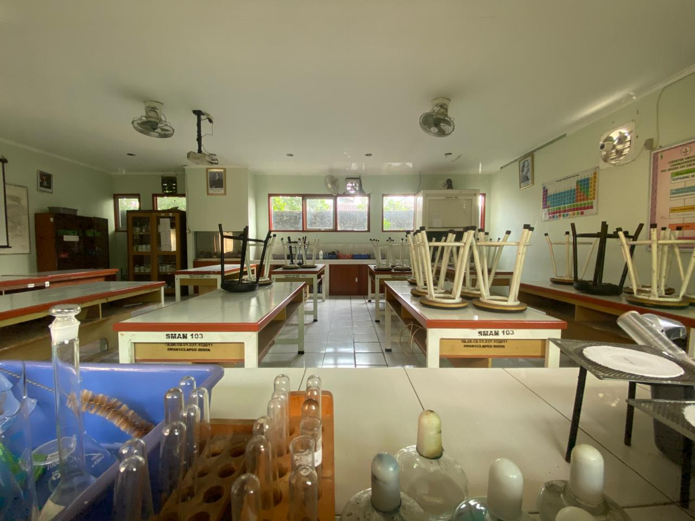
6. Laboratorium Kimia
Laboratorium kimia merupakan tempat siswa melakukan percobaan yang berkaitan dengan reaksi kimia, sifat zat, dan konsep-konsep kimia lainnya. Fasilitasnya meliputi tabung reaksi, gelas ukur, buret, pipet, bahan kimia, serta peralatan keselamatan seperti jas lab dan alat pemadam kebakaran. Kegiatan di laboratorium kimia mengajarkan siswa keterampilan praktis, ketelitian, dan keselamatan kerja.
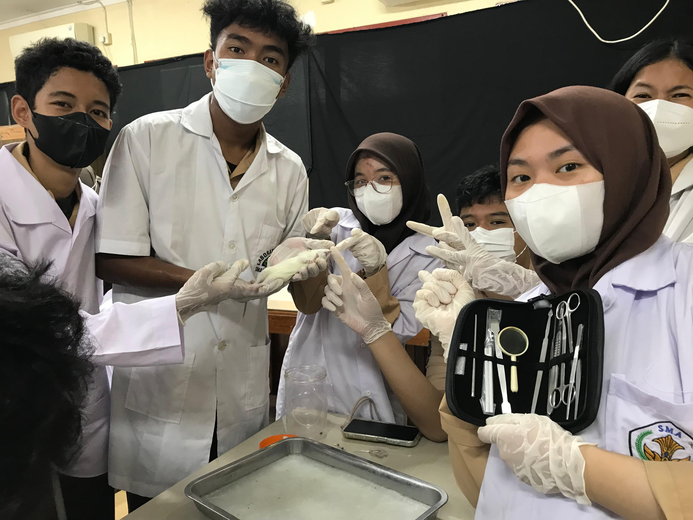
7. Laboratorium Biologi
Laboratorium biologi digunakan untuk kegiatan praktikum seperti pengamatan struktur tumbuhan dan hewan, percobaan bioteknologi sederhana, serta penggunaan mikroskop. Di laboratorium ini tersedia preparat, spesimen, alat bedah, mikroskop, serta bahan pengawet. Siswa dapat belajar lebih dalam mengenai makhluk hidup secara langsung melalui pengamatan dan eksperimen.
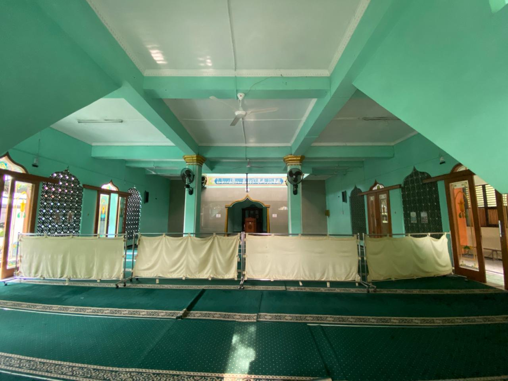
8. Musala
Musala menjadi tempat pelaksanaan kegiatan keagamaan dan ibadah harian bagi siswa serta guru. Fasilitas ini dilengkapi dengan tempat wudhu, karpet, rak penyimpanan perlengkapan ibadah, dan pengeras suara. Selain sebagai tempat ibadah, musala juga berperan dalam membentuk karakter religius dan mempererat kebersamaan melalui kegiatan keagamaan.
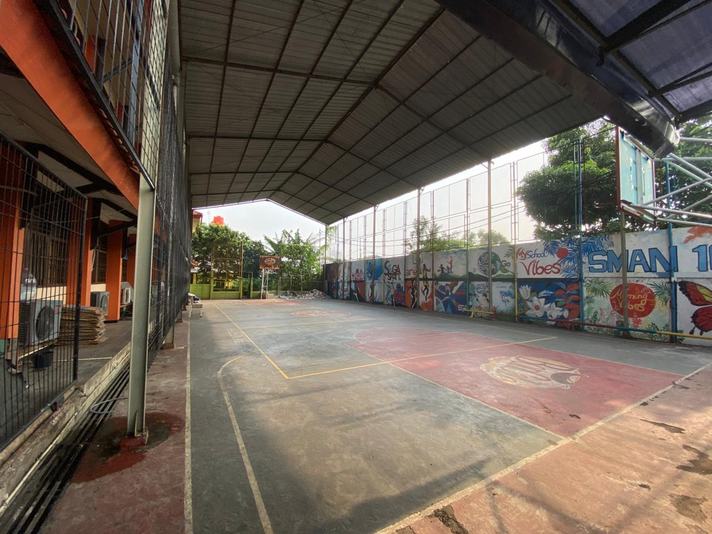
9. Lapangan Olahraga
Lapangan olahraga digunakan untuk kegiatan pendidikan jasmani, olahraga, dan upacara bendera. Kegiatan seperti senam, sepak bola, voli, atau basket dilakukan di sini. Lapangan juga menjadi tempat pengembangan sportivitas, kerjasama tim, dan kedisiplinan siswa. Lingkungan lapangan yang luas dan aman sangat menunjang aktivitas fisik yang bermanfaat bagi kesehatan.
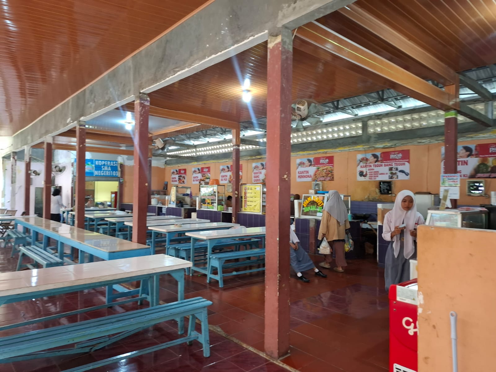
10. Kantin Sekolah
Kantin menjadi tempat siswa dan guru membeli makanan dan minuman saat jam istirahat. Kantin yang sehat dan bersih menyediakan makanan bergizi dan aman untuk dikonsumsi. Selain sebagai tempat makan, kantin juga menjadi ruang interaksi sosial siswa. Sekolah biasanya mengatur standar kebersihan dan pengawasan makanan secara ketat.
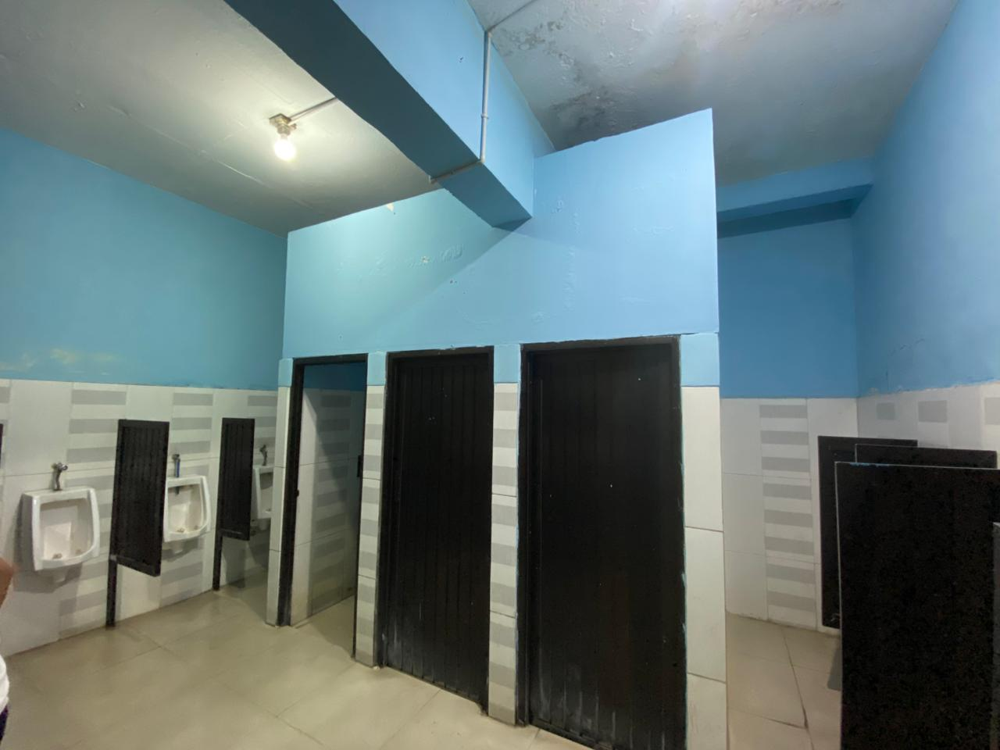
11. Toilet / Kamar Mandi
Toilet merupakan fasilitas penting yang harus tersedia dalam jumlah cukup dan dalam kondisi bersih. Biasanya dipisahkan antara siswa laki-laki dan perempuan serta dilengkapi tempat cuci tangan. Kebersihan toilet dijaga secara rutin agar nyaman digunakan dan terhindar dari sumber penyakit, sehingga mencerminkan lingkungan sekolah yang sehat.
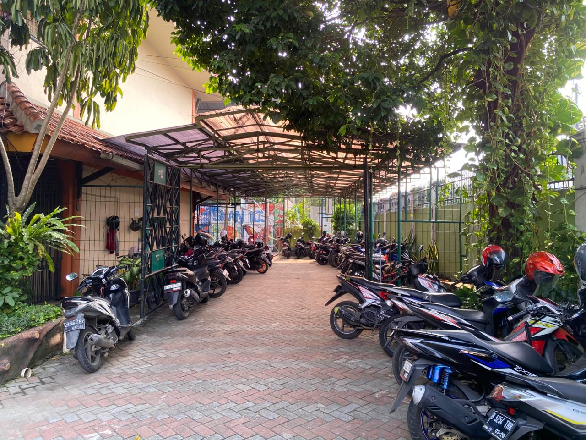
12. Tempat Parkir
Tempat parkir digunakan untuk menampung kendaraan siswa, guru, dan karyawan. Area ini harus tertata rapi, memiliki sistem keamanan, dan akses yang mudah. Penataan parkir yang baik membantu menghindari kemacetan dan menjaga ketertiban lingkungan sekolah.
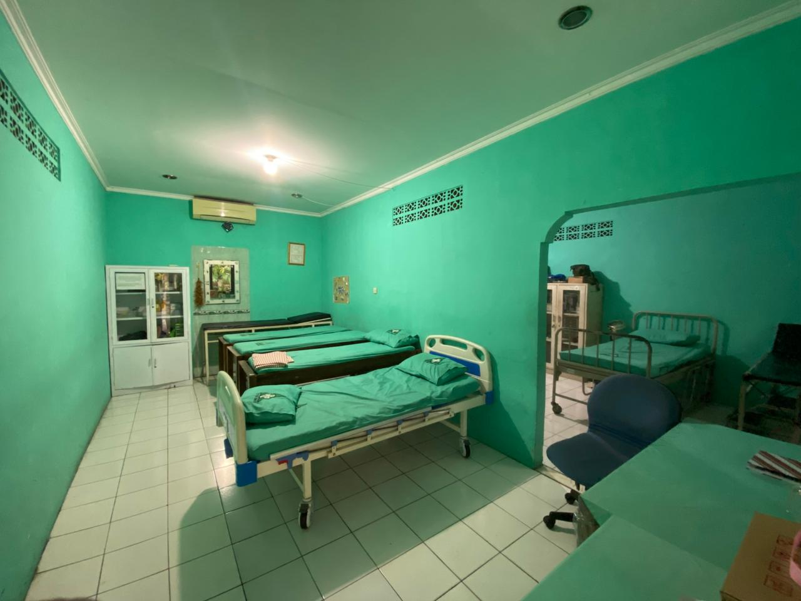
13. Ruang UKS (Unit Kesehatan Sekolah)
Ruang UKS disediakan untuk memberikan pelayanan kesehatan ringan kepada warga sekolah. Di dalamnya terdapat tempat tidur periksa, kotak P3K, peralatan medis dasar, dan perlengkapan kebersihan. UKS juga mendukung program kesehatan sekolah seperti pemeriksaan rutin, dan penyuluhan kesehatan.
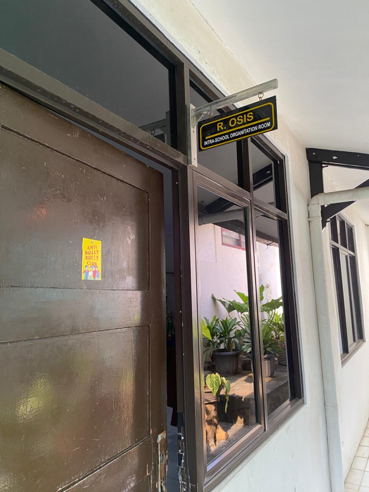
14. Ruang OSIS
Ruang OSIS berfungsi sebagai pusat kegiatan organisasi siswa. Di ruangan ini, pengurus OSIS melakukan rapat, menyusun program kerja, menyimpan perlengkapan kegiatan, serta mengelola administrasi organisasi. Ruang OSIS dilengkapi meja, kursi, papan pengumuman, serta lemari penyimpanan. Keberadaannya mendukung pengembangan kepemimpinan, tanggung jawab, dan kreativitas siswa melalui kegiatan organisasi.
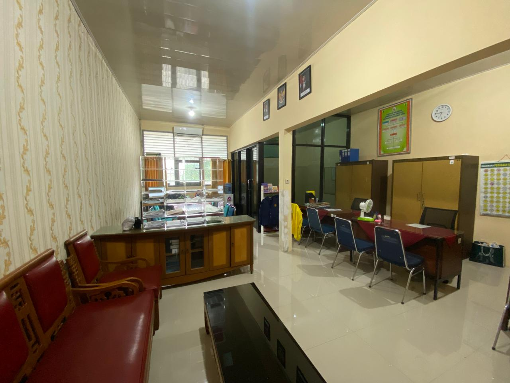
15. Ruang Bimbingan dan Konseling (BK)
Ruang BK digunakan sebagai tempat memberikan layanan konseling, bimbingan belajar, karier, dan pribadi kepada siswa. Ruangan ini dirancang nyaman dan tenang agar siswa dapat berbicara dengan terbuka bersama guru BK. Di sini tersedia meja konselor, kursi tamu, rak dokumen, serta alat pendukung konseling. Fasilitas BK sangat penting untuk membantu siswa mengatasi permasalahan belajar maupun sosial secara profesional.
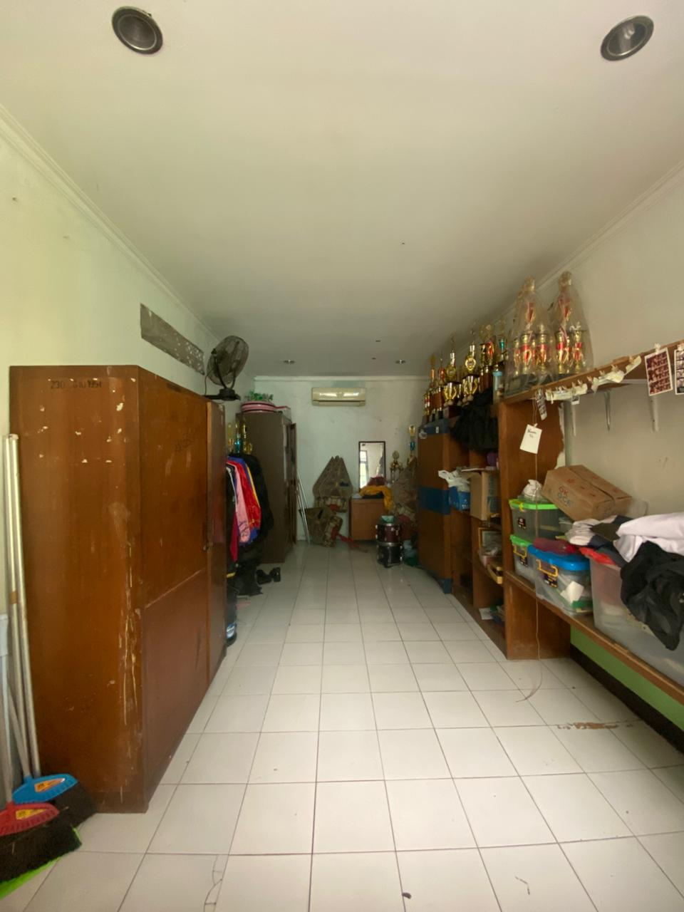
16. Ruang Perlengkapan Ekstrakurikuler
Ruang perlengkapan ekstrakurikuler digunakan untuk menyimpan berbagai peralatan dan atribut kegiatan ekstrakurikuler, seperti alat musik, kostum, perlengkapan olahraga, dan sarana pendukung kegiatan siswa lainnya. Ruangan ini membantu menjaga kerapian dan kelengkapan fasilitas ekstrakurikuler sehingga mudah digunakan saat latihan atau lomba. Penataan yang baik mempermudah pengurus dan siswa dalam mengelola kegiatan secara terorganisir.
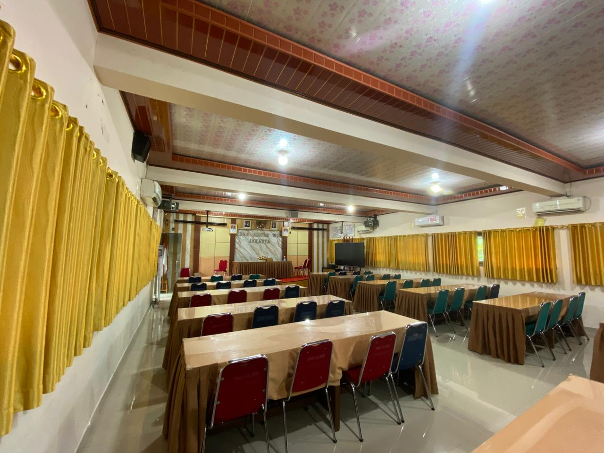
17. Ruang Audio Visual
Ruang audio visual berfungsi sebagai tempat pelaksanaan pembelajaran berbasis teknologi dan multimedia. Ruangan ini dilengkapi dengan proyektor, layar besar, speaker, komputer, serta sistem pencahayaan dan pendingin udara. Guru dapat memanfaatkan ruang ini untuk memutar film edukatif, presentasi interaktif, atau pelatihan. Fasilitas ini membuat proses pembelajaran menjadi lebih menarik, efektif, dan sesuai perkembangan teknologi pendidikan.
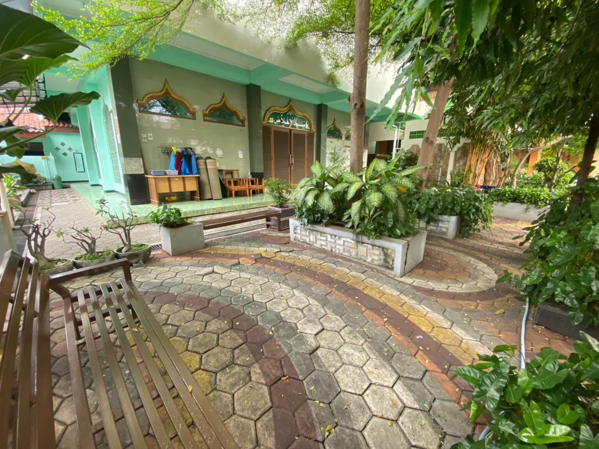
18. Taman Literasi
Taman literasi merupakan area terbuka yang dirancang untuk meningkatkan budaya baca dan menulis di lingkungan sekolah. Biasanya dilengkapi bangku taman, rak buku tahan cuaca, serta hiasan edukatif yang menarik. Taman literasi memberikan suasana belajar yang santai dan menyenangkan, sehingga siswa dapat membaca atau berdiskusi di luar ruangan. Fasilitas ini juga mendukung pembelajaran literasi yang lebih kreatif dan fleksibel.
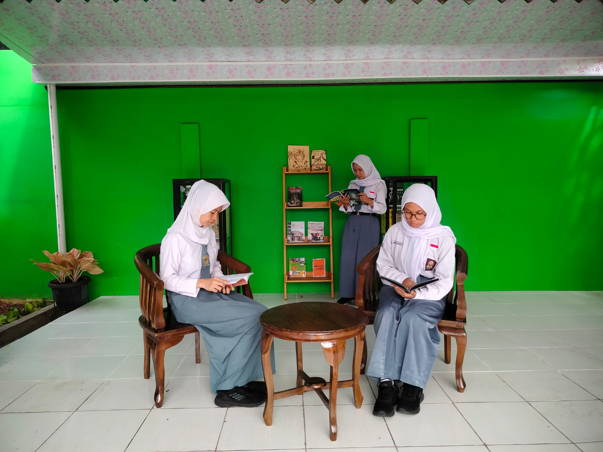
19. Pojok Literasi
Pojok literasi merupakan sudut khusus di setiap kelas atau area sekolah yang berisi koleksi buku bacaan ringan seperti cerita anak, komik edukatif, majalah, dan artikel pengetahuan. Tujuannya untuk membiasakan siswa membaca di waktu luang, menumbuhkan minat baca, dan memperkaya wawasan. Pojok literasi biasanya ditata menarik dengan rak kecil dan hiasan dinding edukatif.
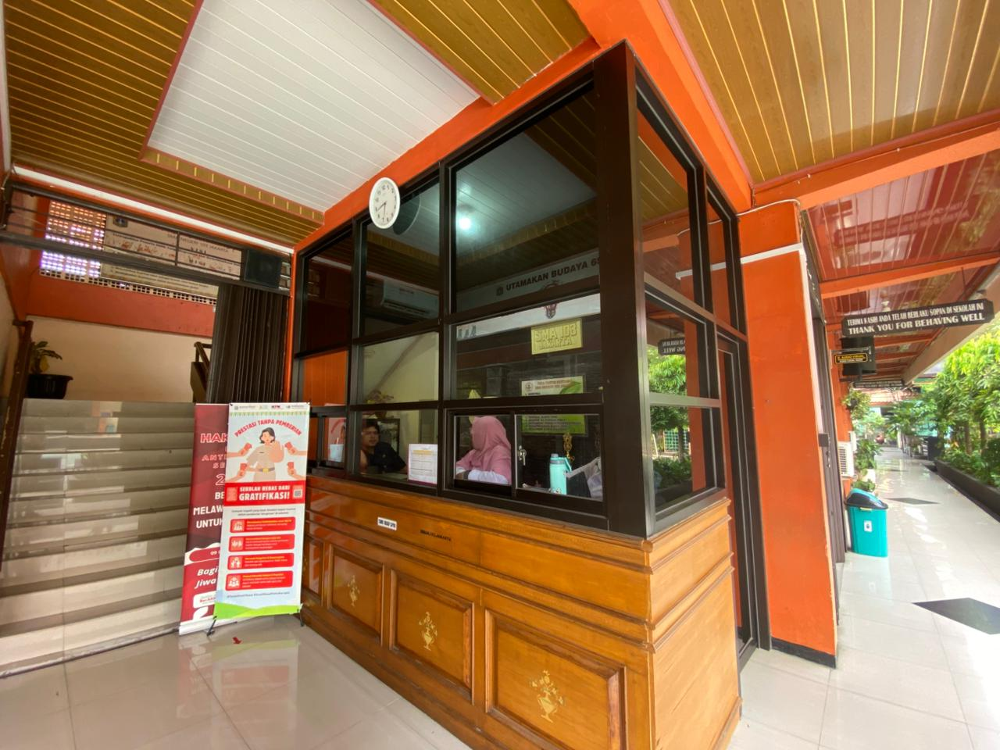
20. Ruang Piket
Ruang piket digunakan sebagai tempat para petugas piket guru maupun siswa dalam menjalankan tugas pengawasan harian. Ruangan ini biasanya terletak di dekat pintu masuk sekolah dan dilengkapi meja, kursi, buku piket, serta alat komunikasi. Fungsi utamanya adalah mencatat kehadiran, mengawasi keterlambatan, mengontrol keluar-masuk siswa, serta menjadi pusat informasi harian sekolah.
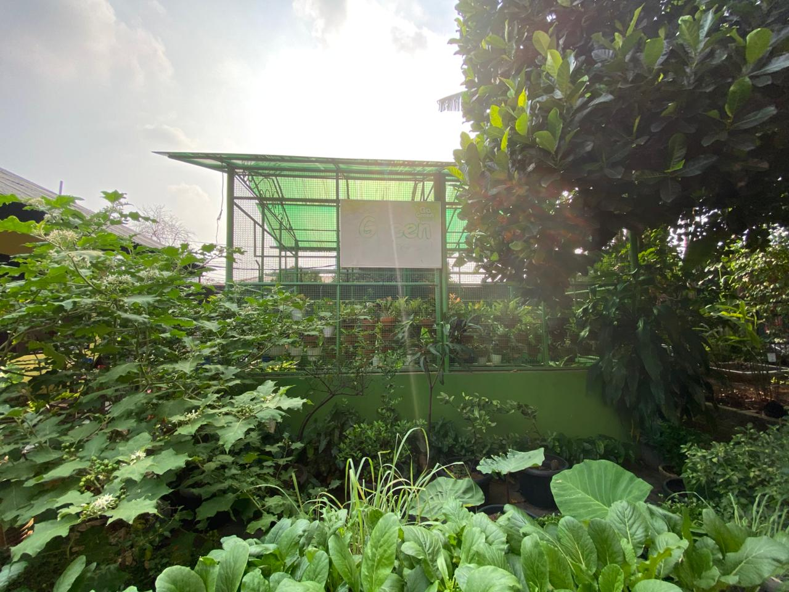
21. Taman Hijau / Hidroponik / Green House
Taman hijau atau green house merupakan area yang berfungsi sebagai sarana pelestarian lingkungan dan praktik pembelajaran berbasis alam. Di sini siswa dapat belajar tentang ekosistem, menanam tanaman secara hidroponik, dan menjaga keindahan lingkungan sekolah. Fasilitas ini mendukung kegiatan proyek lingkungan, melatih kepedulian terhadap alam, serta menciptakan suasana sekolah yang asri dan sejuk.